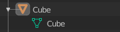
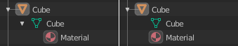

编辑¶
这些偏好设置用于控制相关工具与用户之间的交互方式。
物体¶
新建物体¶
- 关联材质到
To understand this option properly, you need to understand how Blender works with Objects. Almost everything in Blender is organized in a hierarchy of data-blocks. A data-block can be thought of as containers for certain pieces of information. For example, the Object data-block contains information about the Object's location while the Object Data "ObData" data-block contains information about the mesh.
网格示例。¶
有两种关联材质的方式：
- 物体数据
任何创建的材质都将创建为物体数据数据块的一部分。
- 物体
任何创建的材质都将创建为物体数据块的一部分。
关联到物体数据（左）和关联到物体（右）的材质。¶
See also
- 对齐到
- 世界环境
新建的物体对齐到世界坐标。
- 视图
新建的物体对齐到视图坐标。
- 3D游标
新建的物体对齐到3D 游标。
- 进入编辑模式
勾选该项，新建物体后自动进入编辑模式。
- 实例空大小
当创建一个新 集合实例 时，空集合的显示大小。
复制数据¶
复制数据 中的复选框用于定义当物体被复制时，物体的哪些数据被复制，而哪些数据保持关联。当复选框被勾选的时候，其所代表的数据将随着物体的复制而一同复制到副本。当没有复选框被勾选的时候，将使用源物体的关联数据。
比如，如果勾选 网格，当复制物体时，会随新物体创建网格数据的副本，而且每个副本的网格都是独立的。如取消勾选，当修改其中一个物体的网格时，其余副本也会随之被修改。
上述规则适用于 复制数据 列表中的所有复选框。
3D游标¶
- 游标表面投影
通过单击放置游标时，游标将投影到游标下的表面上。
- 游标锁定调整
当视图锁定到游标时，移动游标可以避免基于新偏移的视图 跳转 。